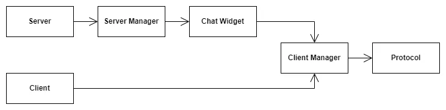
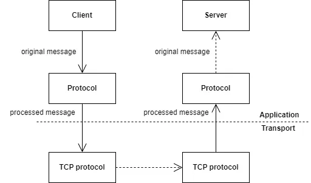
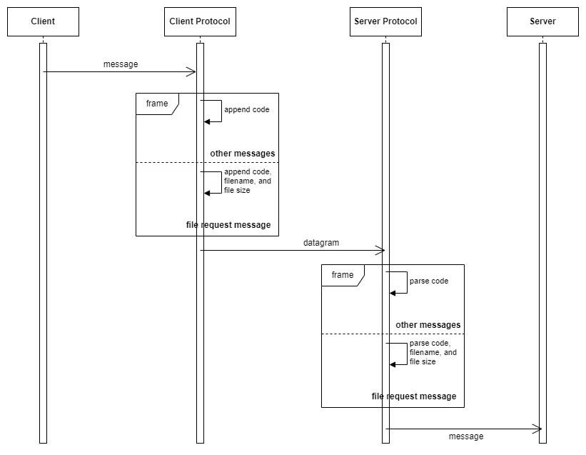

introduction
LAN Connect is a practice project I wrote from scratch after I learned the basics of the Qt framework and network (socket) programming. I found it fascinating that two machines on the same local area network can easily communicate with each other using the socket API provided by the transport layer, so I couldn't wait to write my own local area network communication application after learning the principles. This project was quite a challenge to me back then, but looking at it now, I feel a lot can be improved or extended. I will discuss them in the last section.
overview
This application utilizes the classic single-layer client-server architecture.
Each client is connected to the same TCP port on the server, and they can exchange datagram over this connection. Since this was an experimental project to learn the basic principles, I did not implement datagram replay (i.e. C2C communication is not supported). This application supports the following key functionalities:
- TCP connection: each client establishes a TCP connection with the server.
- Username: the client can choose a username before connecting to the server.
- Messaging: each client can message with the server privately.
- File transfer: each client can transfer (small) files with the server privately.
- Typing status: when the client is typing, the server sees a typing indication. Similarly, when the server is typing, the client sees a typing indication.
- Availability: the client can choose between three different availability statuses: available (green), busy (yellow), and away (red). When the client disconnects, the availability status becomes disconnected (gray). This status can be seen on the server side.
The following screenshot shows a client and the server side-by-side.

Please note: in this project, I focused on implementation instead of UI design.
details
The UML diagram below shows the structural design of the application. Note that fields and methods related to UI elements (buttons, frames, etc.) are not shown.
The whole application follows the client-server architecture. From the above UML diagram, one can also see that for the client and server alone, I used a layered architecture. This is illustrated in the image below.
The Client class is responsible for the UI (the view), and the Client Manager class is responsible for the logic (the control). The Protocol class is responsible for packing and unpacking all kinds of messages according to the protocol.
The structure is a bit more complicated for the server. The Server class is responsible for the UI (the view). On the server UI, there is a tab for each connected client. This tab has its own UI, which is what the Chat Widget class is responsible for. To implement the logic (the control) of the server UI, there is the Server Manager class. Since each chat tab with a client is structurally symmetric to the client, the Chat Widget class also uses the Client Manager class for control implementation. Finally, there is the same protocol instance on the server side.
The following sequence diagram illustrates the (simplified) connection procedure.
These are the initial connection steps in greater details:
- Server initiates. Server manager and protocol are instantiated.
- Client initiates. Client manager and protocol are instantiated.
- Server sets its IP address and TCP port, and it starts listening.
- Client chooses an IP address and TCP port and sends a connection request (through TCP protocol of course, not through our own protocol).
- If the IP address and TCP port are correct, and the server is currently listening, connection is established. In any other case, the connection attempt will fail. If connection is established, the client will receive a confirmation.
- The client manager sends the username and status (initially available) to the server through our own protocol.
- The TCP socket with the connected client is added to the clients list, maintained by the server manager.
- An ID is allocated for the client, and the client shows up on the list on the server UI.
- A client manager is instantiated by the server manager.
- A chat widget is created by the server UI, and the client manager is connected to the chat widget.
Messaging between the client and the server is handled by the protocol instances. The image below illustrates the process.
Of course, the protocol instance is responsible for all communications between the client and the server, not just text messages. It works symmetrically for server messaging the client.
Because this is not a complicated application, the protocol is simple. For each type of message (text message, username, availability status, isTyping, file request, file accpetance, file rejection), there is a corresponding code, and this corresponding code is appended to the beginning of the message. For file request message, in addition to the code, file name and file size are also appended as part of the protocol.
I didn't implement more advanced functionalities such as file segmentation. Therefore, file transfer happens in exactly one TCP datagram. Obviously, the consequence of this is that file size is capped at approximately 56KB.
The manner in which a file is transferred is similar to other types of messages. The only difference is that the receiver (i.e. the server) has the option to accept or reject a file. The following sequence diagram illustrates this process.
The next section shows some demonstrations.
key features
Below are some key features I have implemented for this application, along with some video demonstrations.
- Start a server and listen at a TCP port. Connect a client to the server while setting a username.
- Messaging between client and server.
- Typing status indicator (client sees an indication when server is typing, and vice versa).
- Availability status.
- File transfer from client to server.
- Connecting multiple clients at the same time.
possible extensions
Some extensions I'm considering implementing:
- Server-side authentication: this involves a database (Sqlite) integration on the server side. Also, this requires an extension on the current protocol.
-
C2C communication: this requires a significant
upgrade on the entire application.
- Every time a client connects to or disconnects from the server, the server needs to broadcast this changed to all the connected clients.
- The protocol needs to support a new message type: a private message with a designated client receiver.
- The server needs to support message relay.
- Based on the previous extension, the receiver client should be able to decline the message from the sender client.
- Two more advanced features: chatrooms and file segmentation (for transferring large files).